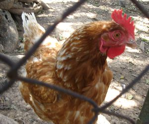

Bachillerato
 De: La Frikipedia, la enciclopedia extremadamente seria.
De: La Frikipedia, la enciclopedia extremadamente seria.
Se conoce como Bachillerato, Bachiller, Batxillerat (en idioma catalán) o muerte lenta y dolorosa a una etapa postobligatoria que sucede despues de la E.S.O. y precede a la universitaria/F.P. de grado superior/curro, en la cual el sujeto de pruebas mal llamado estudiante tiene que asimilar una serie de contenidos a fin de prepararse para la tan temida Selectividad (la única utilidad del Bachiller).
Los cursos
Básicamente 2 (serán 3 una vez la L.O.M.C.E. entre en vigor):
- 1º de Bachiller: tiene el objetivo de que el sujeto de pruebas tantee por sí mismo la agonía que deberá soportar los próximos 46656000 segundos de su vida desde el momento en que pisa la clase hasta que recoge el boletín de notas final de la próxima etapa. A los grandes les importará un comino los intereses de cada cobaya en especial, solo se les permitirán unos 30 min de descanso al día y se les introducirá al mundo de las matadas a estudiar y del aislamiento social. La cobaya, sea cual sea, deberá asimilar los siguientes contenidos:
- Culturilla general a la española.
- Culturilla general independentista/gallega/vasca (según que zona vivas).
- Introducción a los colorines (Filosofía).
- Adoctrinamiento del catolicismo.
- CMC (Como Macerar Cagadas), es ciencia a lo cutre.
- Educación física, generalmente la favorita, aunque la que mata a los sujetos por estrés oxidativo.
- Inglés, aunque con un nivel tan malo que solo sabrás decir "Hello".
Además de estas, según la clasificación por estratificación, la cobaya deberá asimilar adicionalmente:
- Grupo cobayas científicas:
- Biología y geología.
- Física y química.
- Matemáticas (muerte segura).
- Grupo cobayas tecnológicas:
- Matemáticas.
- Física y química.
- Tecnología industrial.
- Grupo cobayas humanísticas:
- Latín
- Griego
- Historia contemporánea.
- Grupo cobayas sociales:
- Economía
- Matemáticas sociales (incluye estadística, que hasta los tecnológicos usan
- Geografía.
Además la esclavizada cobaya deberá cogerse un paquete más para suicidarse, que incluye jugar al PC, sopas de letras a la española...
- 2º de Bachiller: es la etapa crítica en la cual la susodicha cobaya de laboratorio, ahora convertida en máquina de estudiar, debe matarse a estudiar de madrugada y quedarse fines de semanas sin hacer ejercicio para poder satisfacer las demandas de los grandes que les esperan en la Universidad. Tiene como asignaturas:
 Al llegar a esta etapa, los sujetos presentan esta forma.
- Historia de Hispanié.
- Colorines que chutan de verdad (Historia de la Filosofia).
- Culturilla a la española de la buena.
- Culturilla general independentista/gallega/vasca (si vives en las zonas más remotas).
- Inglés nivel A1.
- Grupo cobayas científicas:
- Biología.
- Química (útil para preparar drogas, entre otras cosas).
- Matemáticas II (mal llamada éxtasis).
- Grupo cobayas tecnológicas:
- Matemáticas II.
- Física (si lo que te gusta es preparar bombas nucleares o pegarle descargas eléctricas a la gente).
- Tecnología industrial II.
- Grupo cobayas humanísticas:
- Latín II
- Griego II (si odias las letras raras puedes coger Geogrfía en su lugar)
- Historia del arte.
- Grupo cobayas sociales:
- Economía II
- Matemáticas sociales (igual que antes).
- Geografía obligada
Una vez se acabaron esos 46656000 s de sufrimiento (sin incluir estivaciones ni hibernaciones), la máquina de estudio deberá soportar un embite ígneo que soportará o morirá llamado Selectividad, mediante la cual se determinará si esa máquina de estudio es lo suficientemente útil para servir de esclavo para los grandes (las Grandes Empresas y sus socios del Poder).
Esta etapa, sirve para promover la religiosidad; por lo que muchos alumnos pasan del ateismo a defender una creencia religiosa con la esperanza de aumentar sus posibilidades de aprobar.
Profesores
Llevan las asignaturas a los extremos, exigiendo en los exámenes; sin embargo, en la selectividad, el examen parece sacado de Educación Infantil en comparación con lo que los profes te hacían hacer. El suspenso, osea, suspense mientras te entregan esos maliciosos exámenes es alto, solo falta poner banda sonora suspense-americana para que a más de uno le de un infarto. La mayoría de profesores disfrutan tomando tu examen en particular y realizar un concurso de miradas en las que se decantan por poner cara de susto, indignación o cara de "aquí huele a mierd..."
Hay tres tipos de profesores:
- Los simpáticos: representan menos del 1% del total de profesores.
- Los bordes o antipáticos, te encontrarás de estos a montones.
- El conserje, personaje con aires de Chuck Norris, el personaje de Don Limpio (versión antipática), con una composición hipotética de un 0,001% de aire caliente y un 99,999% de mala hostia, o el entrenador "potato-chan" de SNK. Interviene ante los problemas y con su simple expresión en el rostro, mata al alumnado, o, como mínimo, les expropia su posesión más preciada: su móvil.
¿Para que sirve?
Según se ha demostrado científicamente, su unica utilidad es convertir a los sujetos en máquinas y convertirlos en matados del estudio, aunque los que lo imparten aseguran que su finalidad es formar supuestamente al alumno y que adquiera una cultura general básica más sólida que su etapa anterior.
Frikipedia 2005-2016, Licencia
GFDL 1.2 - Extraído por FrikiLeaks